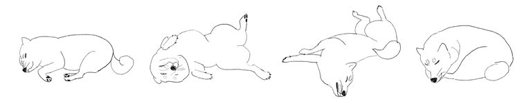
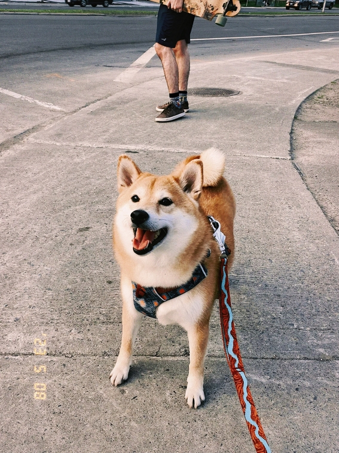
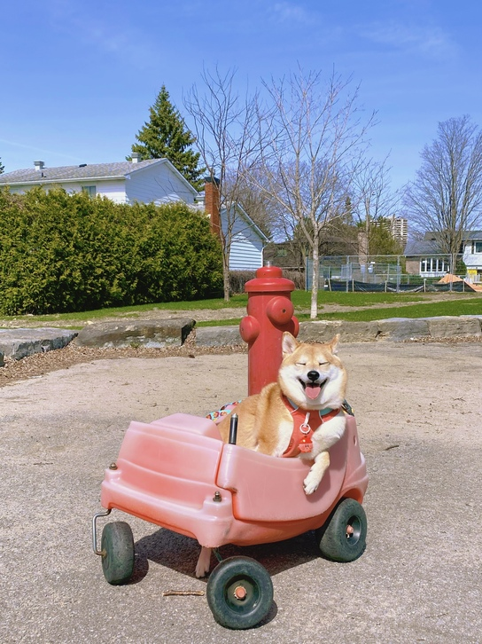

Links
HTML Tags
- em
- Defines emphasized text
- div
- Defines a section in a document
- cite
- Defines the title of a work
- br
- Defines a single line break
- abbr
- Defines an abbreviation or an acronym
The Charming Shiba Inu
Bubble, my adorable Shiba Inu, is a bundle of joy. With her small yet energetic frame, bright brown eyes, and a beaming smile, she melts hearts. Her soft and smooth coat showcases a rich brown hue, making her irresistibly beautiful.
Shiba Inus enjoy a variety of activities as hobbies.
- Exploring: Shiba Inus love to explore their surroundings and investigate new scents and sights.
- Playing: They enjoy interactive playtime, whether it's with toys, puzzles, or games with their owners.
- Training: Shiba Inus have a keen intellect and enjoy mental stimulation through obedience training and learning new tricks.
- Chewing: Providing appropriate chew toys helps satisfy their natural urge to chew and keeps them entertained.
- Sunbathing: Shiba Inus often enjoy basking in the sun and relaxing in warm spots around the house or outdoors.
Meet Bubble
Bubble is enthusiastic about games and activities, especially chasing balls and playing with toys. Her lively running and jumping bring sheer delight. Moreover, she's a great listener and a constant companion, joining me in every wonderful moment. Whether it's enjoying outdoor walks in the sunshine or relaxing indoors while watching TV, she's my faithful partner.
Get to know Bubble
To me, Bubble is more than a pet; she's a cherished part of my life. Her unconditional love and companionship make her my closest friend. I'm grateful for Bubble's presence, as she brings endless joy and warmth, filling my days with happiness. She's my favorite Shiba Inu and the most special pet in my heart.